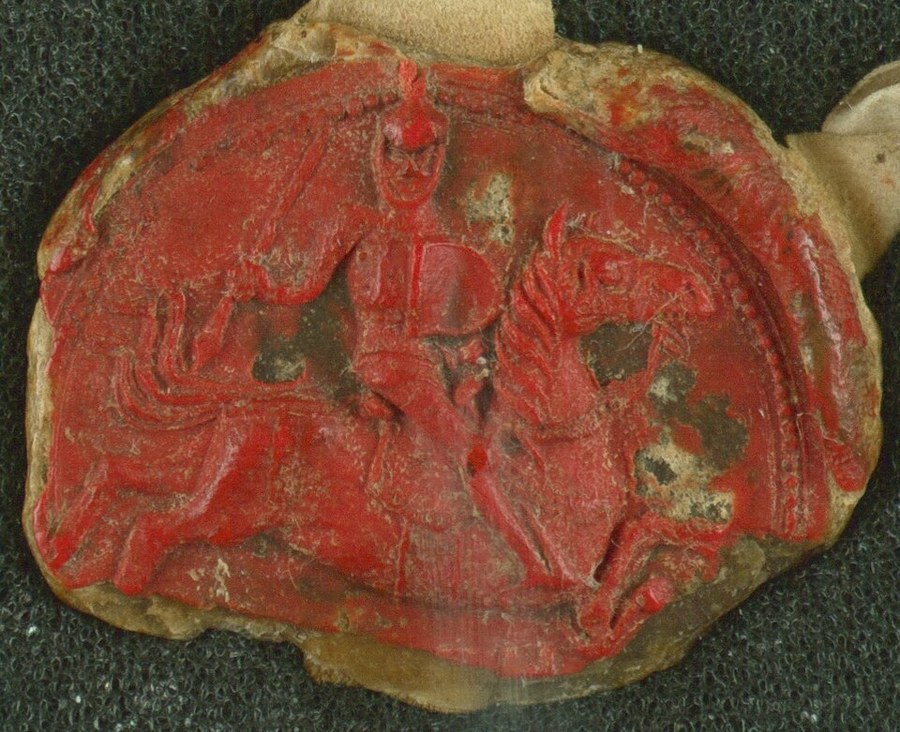

Kaributas¶
Ryšiai
Child of: Algirdas · Uliana of Tver (Julijona Tverietė), Algirdas’s second wife
Kaributas

Kaributas · character — Image: Kaributas, Public domain via Wikimedia Commons¶

Tipas |
character |
Years |
c. 1355–1404 |
Status |
Historical record |
Pastaba |
Duke of Novgorod-Seversky, son of Algirdas; brother to Jogaila and Skirgaila. |
Summary¶
Kaributas (baptised Dmitry; Dmitry Korybut) is Jogaila’s half-brother and Algirdas’s son, Duke of Novhorod-Siverskyi in the Ruthenian south-east. He is a minor figure whose single act in the saga is off stage: his 1382 revolt pulls Kęstutis away from Vilnius while the Riga merchant Hanulas takes the city for Jogaila. He returns in Book II as the tired rebel who confesses that he sold nothing, because there was nothing to sell.
Appearance & tells¶
Book II ch. 12 gives the only portrait: about thirty-five, broad-boned, grey at the temples, walking out to meet Vytautas on foot, without a sword, with two children and his wife behind him. He speaks Ruthenian in the gentle tone one uses with an invalid. His tell is resignation: he counts his fingers where others count horsemen.
Want · Need · Lie · Truth¶
Want (external) |
To keep his own principality in the south-east, free of both Vilnius and Kraków. |
Need (internal) |
To stop choosing the losing brother and the losing cousin. |
Lie they believe |
That a minor prince can rebel safely if the stronger side is slow. |
Truth they learn (or refuse) |
That Vytautas does not kill his rivals; he removes them one by one, like teeth (Book II ch. 12). |
Arc by book¶
Book I (1382): an offstage campaign in the Severian land draws Kęstutis away from Vilnius in June (ch. 1, 2); Vytautas names the date as the moment when the Grand Duke’s mercy was repaid with a stab.
Book II (1393): the second wave of rebellions against Vytautas; he comes out on foot, disarmed, says he sold nothing, loses Novhorod-Siverskyi and is given a quieter holding in the south (ch. 12).
Book IV and V: appears only as the father of Žygimantas Kaributaitis, the Hussite claimant, whose captivity after Pabaiskas (1435) closes the line (Book IV ch. 12; Book V ch. 13).
Power & magic¶
Tier 0. A Ruthenian prince with no gift and no bargain; his rebellions are conventional politics. The Pact’s clause about not shedding Gediminid blood protects him from Vytautas’s sword, which is why Vytautas chooses to dismantle his principality rather than his person (Book II ch. 12).
Record vs saga¶
[Historical record]: Born after 1350, baptised Dmitry (c. 1380), Prince of Novhorod-Siverskyi until 1393; his revolt there in 1382 drew Kęstutis away from Vilnius and so helped Jogaila retake it (en.wikipedia). He backed Jogaila in 1381-84 and 1389-92, but after the Ostrów Agreement (1392) refused to accept Vytautas, was beaten near Lida in 1393, held for a time and then given Zbarazh, Bratslav and Vinnytsia. He is last mentioned in 1404 during Vytautas’s Smolensk campaign. His son Sigismund Korybut (Žygimantas Kaributaitis) claimed the crown of Bohemia in the 1420s. See Wikipedia.
[The saga’s invention]: The disarmed surrender in Book II ch. 12 and the line about being taken „like teeth“; his word to Švitrigaila at the horses. None of it contradicts the record, which is silent on the scene.
Tarimas¶
ka-RI-bu-tas (/kɐˈrʲɪbʊtɐs/), English respelling kah-RIH-boo-tahs.
Appearances¶
Book I: ch. 1 and 2 (the June 1382 campaign, mentioned). Book II: ch. 12 (Brothers‘ Rations; the 1393 meeting). Book IV: ch. 12 (as father of Žygimantas Kaributaitis) and the afterword. Book V: ch. 13 (Pabaiskas) and the afterword. Not to be confused with Karigaila, another son of Algirdas.
Sąsajos¶
graph LR
algirdas["Algirdas"]
kaributas["Kaributas"]
uliana_tver["Uliana of Tver (Julijona Tverietė), Algirdas's second wife"]
algirdas -->|Parent of| kaributas
uliana_tver -->|Parent of| kaributas
style kaributas stroke-width:3px